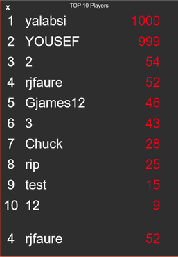
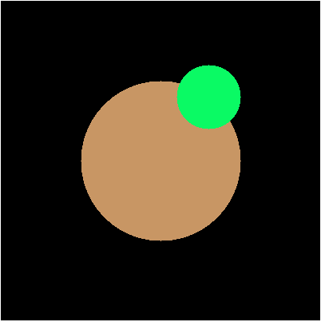
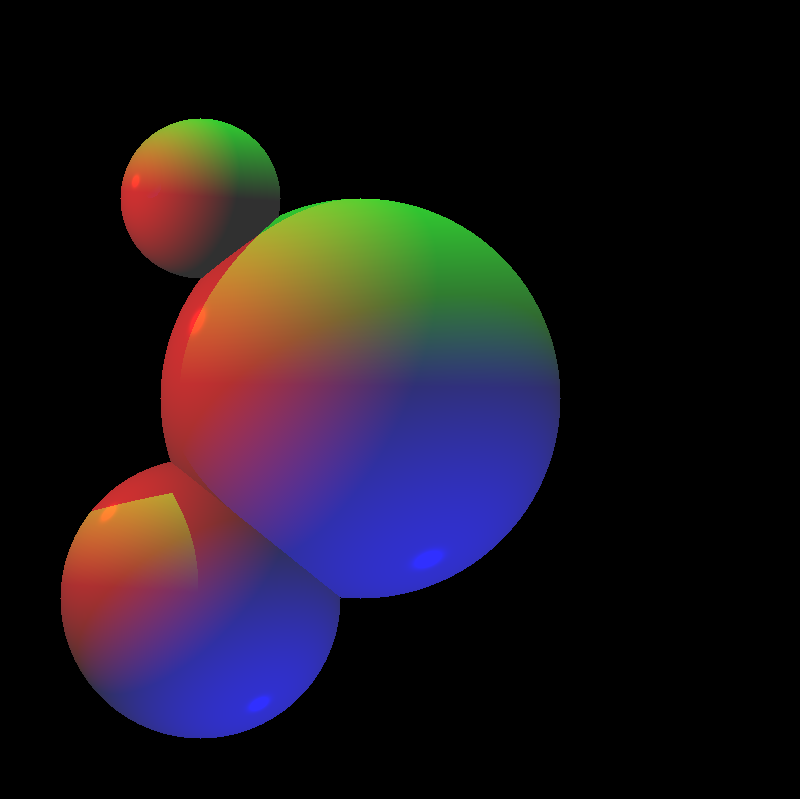
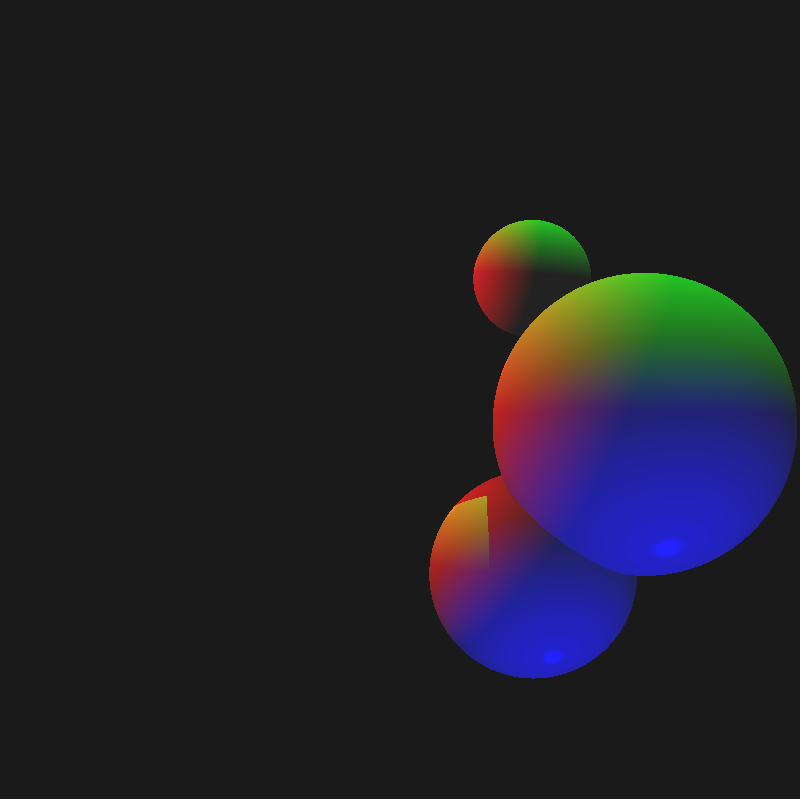
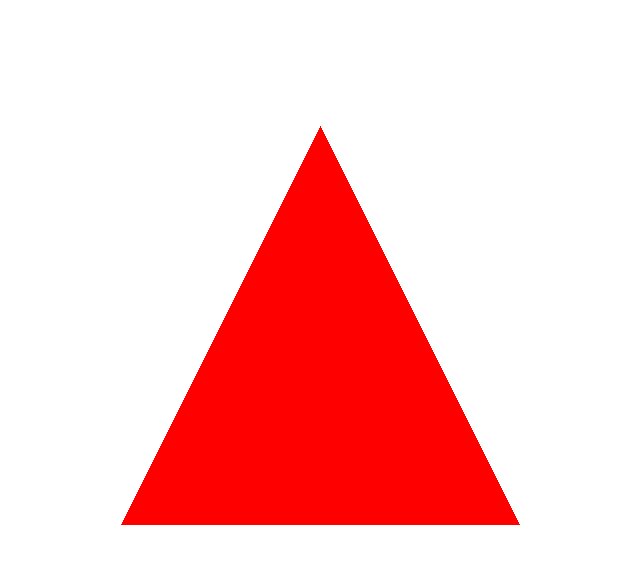
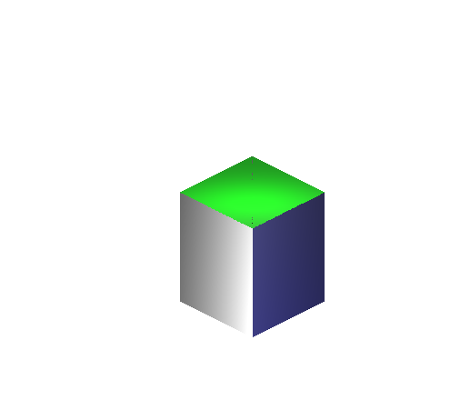
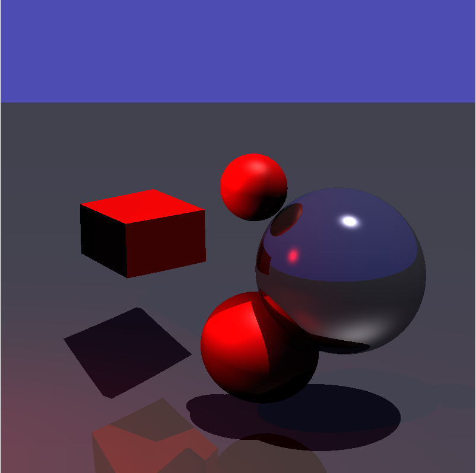
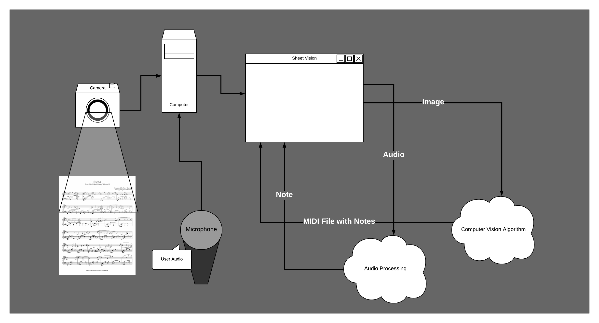

Projects
Run Samurai, Run!
Summary Run Samurai, Run! is a top-down 2D infinite side scrolling runner game for mobile devices where the user will be able to take control of a small ninja and run and fight through mobs of enemies. The user has the choice between avoiding the enemies in the game or attacking them for rewards and upgrades, since the game scales in difficulty it is not be advised for the player to avoid all the enemies he/she sees since these upgrades will be essential for record-beating runs. The game has 2 game modes, single player and head to head multiplayer, for single player is the base game with the infinite running and leaderboards. Head to head is our multiplayer implementation of the game with a time limit and different methods of upgrading and scoring. You will compete 1 on 1 vs one of your friends or a random online player, the player who is able to gain the highest score (by staying alive the longest or by slaying enemies) will be crowned winner.
Role/Big Picture Contribution Art, Game Design, Game Loop Development, UI Menu Design, Game Mechanic Design.
Skills and knowledge gained
- P5 JS
- HTML, CSS
- PHP
- Game Loop Development
- Game Design Practices
- AJAX
- UI Menu Design
- Game Mechanic Design


- 
SafetyNet
Summary SafetyNet is an iOS messaging service that does not require any centralized server to operate. It uses a peer-to-peer network to allow users to send messages to each other without the need for wifi or cellular data.
Role/Big Picture Contribution I worked on ideating and implementing the peer-to-peer messaging functionality.
Skills and knowledge gained
- Swift
- iOS Development
- Peer-to-Peer Networking
- End to End Encryption
Rubik's Cube Genetic Algorithm Solver
Summary This Rubik's Cube Solver is a genetic algorithm that solves a simulated model of a Rubik's Cube.
Role/Big Picture Contribution Implemented virtual Rubik's Cube model and collaborated to develop the genetic algorithm that solves it.
Skills and knowledge gained
- Python
- Genetic Algorithms
- Transformations
- Matrixes
Ray Tracing Engine
Summary Ray tracing is a computationally expensive rendering technique which immitates realistic light bounces to provide realistic looking scenes. I worked on writing an engine that renders scenes using ray tracing, using vanilla javascript, which opens on the browser. Currently our engine is capable of rendering both spheres and triangles. Since it can render triangles and spheres, it can potentially render most other shapes such as cubes, given most shapes can be created using any combination of these geometric shapes.
Role/Big Picture Contribution I worked mainly on applying lighting formulas such as blinn-phong on our scenes as well as rendering for triangles and cubes.
Skills and knowledge gained
- Vanilla Javascript
- Graphics Pipeline
- 3D Graphics Generation
Resources
- NVidia Ray Tracing Documentation
- Scratch-A-Pixel Introduction to Ray Tracing
- Berg. Computational geometry : algorithms and applications. Berlin: Springer, 2008. Print.
- 
- 
- 
- 
- 
- 
Sheet Vision - Senior Design
Summary Sheet Vision is an application that can read and show a user how sheet music is played, and how it is supposed to sound. This will lead to the user being able to draw parallels between what is on the sheet, and the music being played, supplementing the learning process of reading sheet music. Not only will our application play the music on the sheet, but it will also listen to the user playing it, and will give proper feedback to the user, to fix mistakes they may be making.
Role/Big Picture Contribution Full-stack development for the user interface and connections between our application and the computer vision scripts needed.
Skills and knowledge gained
- ElectronJS
- ReactJS
- AWS (Amazon Web Services)
- Python
- Computer Vision
- Numpy
- HTML, CSS, JS
Supporting Documents
- 